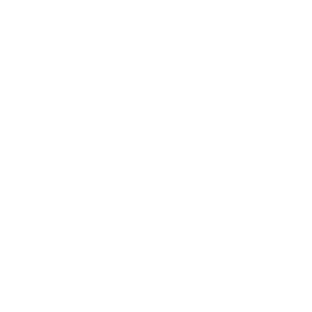
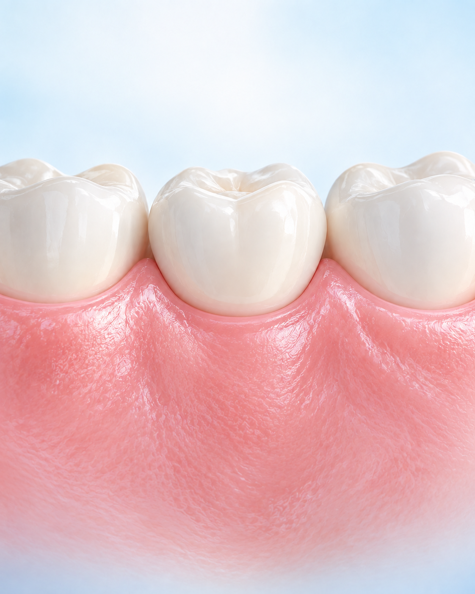
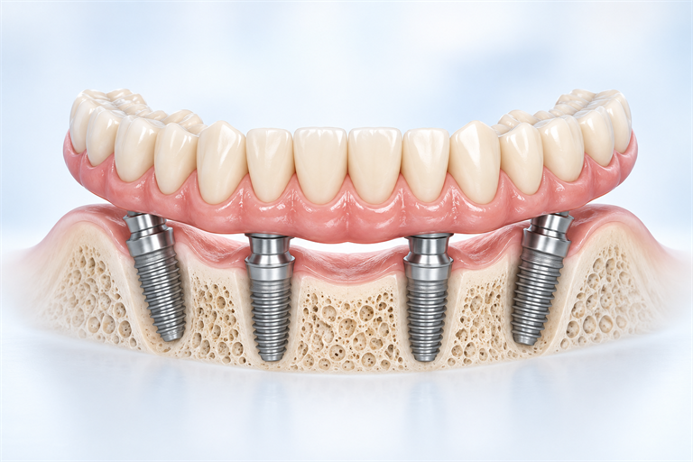
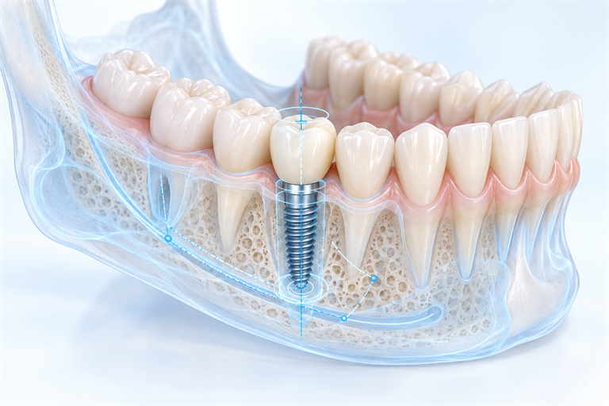
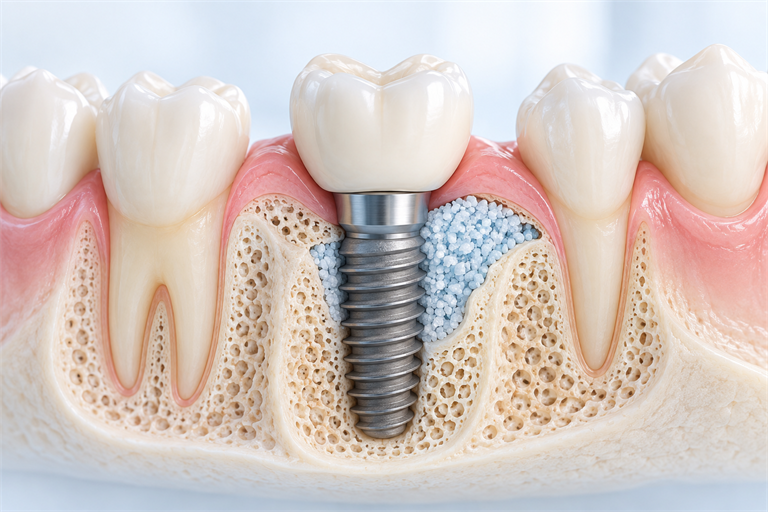
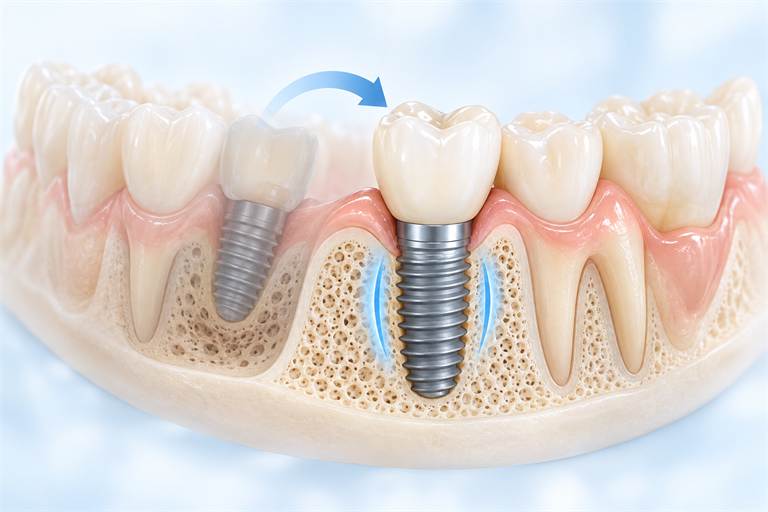
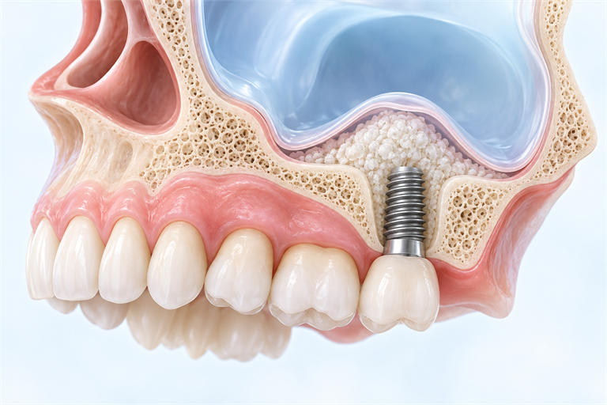
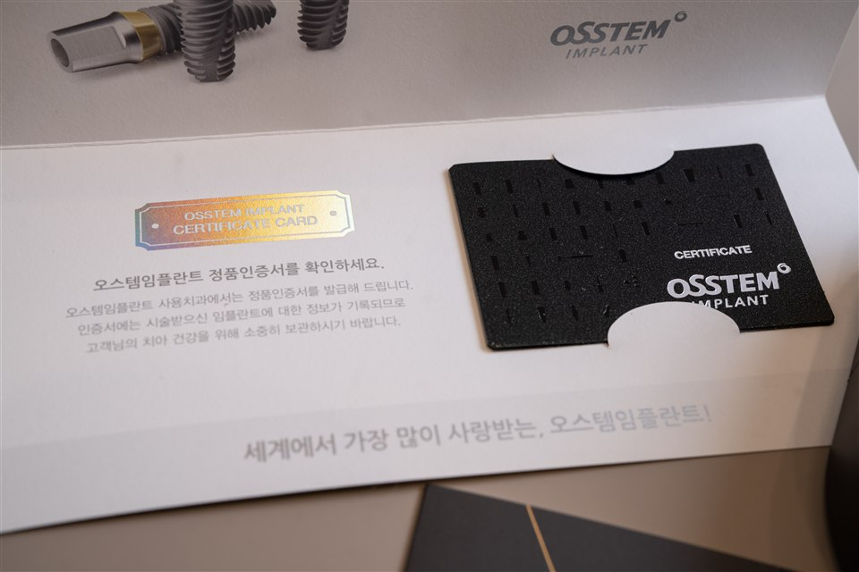

임플란트
심고 나면 끝일까요?
심은 뒤의 시간이 더 깁니다.
진단부터 사후관리까지,
한 주치의가 이어서 살핍니다.
임플란트는
심은 뒤부터 시작됩니다.
임플란트는 인공치아이지만그 주변은 여전히 내 잇몸입니다.


식립이 잘 되었더라도 위생관리와 정기검진이 부족하면 임플란트 주변 잇몸과 뼈에 문제가 생길 수 있습니다.
그래서 새론이치과는식립만큼 사후관리를
중요하게 생각합니다.
나는 어떤 상담이
필요할까요?
현재 상태와 가장 가까운 항목을 골라보세요.
선택 내용은 저장되지 않습니다.
자가 체크 진행
1/ 3단계
1단계
현재 치아 상태를 알려주세요.
2단계 · 복수 선택 가능
어떤 부분이 가장 걱정되나요?
3단계
상담받으실 분을 알려주세요.
선택 내용을 바탕으로 추천드리는 상담
기본 임플란트 상담
현재 치아와 주변 잇몸 상태를 확인하는 상담이 필요합니다.
2016년부터
한자리에서 지켜온
진료의 가치
처음의 기록부터 오늘의 관리까지
한 주치의의 시선으로 이어갑니다.
2016년부터 지금까지
김해 한자리에서
김해 한자리에서
처음의 마음 그대로
흔들림 없이 지켜온 인연의 무게가 있습니다. 처음 그 마음 그대로, 한결같은 자리에서 환자분들과 함께 걸어왔습니다.

기록이 쌓일수록,
변화는 더 선명하게 보입니다
처음의 잇몸 상태와 오늘을 비교해 작은 변화까지 진료에 반영합니다.

문제가 생긴 뒤보다,
생기기 전에.
불편하지 않을 때도 정기적으로 살펴 오래 편안하게 사용할 수 있도록 관리합니다.

내 잇몸을 가장 잘 아는 사람은 처음부터 변화를 지켜본 주치의입니다.
임플란트를 심는 것으로
치료 이후의 과정까지 함께하겠습니다.
제 역할이 끝난다고
생각하지 않습니다.
황수정 대표원장
보건복지부 인증통합치의학 전문의
- 조선대학교 치의학 석사
- Osstem 임상자문위원
- Osstem AIC Implant Master Course 수료
- Standard Implant Training Course 수료
- 前 순천향대학병원 외래임상조교수
- 前 나비플란트치과, 새로치과 대표원장
새론이치과를
선택해야 하는 이유
보이지 않는 진료의 안쪽까지,
새론이치과가 지키는 네 가지 기준입니다.
디지털 진단
3D CT로 잇몸뼈의 두께와 신경 위치를 확인하고, 수집한 정보를 치료계획에 활용합니다.
기구 세척 및
고압 멸균
기구의 미세 이물질을 세척한 뒤 고온·고압 증기 멸균 과정을 거쳐 다음 진료를 준비합니다.
진료실 위생
진료 장비의 접촉 부위를 관리하고, 멸균 포와 개별 기구 트레이로 수술 환경을 준비합니다.
정품인증서
제공
사용한 임플란트의 제품 정보를 확인하고 이후 관리에 참고할 수 있도록 정품인증서를 안내합니다.
복용 중인 약과 기저질환,
반드시 먼저 알려주세요.
안전한 치료계획을 세우기 위해
현재의 건강 상태를 함께 확인합니다.
이런 약을 복용하고 있다면
- 혈액을 묽게 하는 약
- 골다공증 치료제
- 당뇨 치료제·인슐린
- 스테로이드·면역 관련 약물
복용약을 임의로 중단하지 마세요.
약 이름이나 처방전을 가져오시면 확인에 도움이 됩니다. 필요한 경우 해당 의료진과 협의 후 치료계획을 세웁니다.
모두에게 같은 방법이
정답일 수는 없습니다.
잇몸뼈와 구강 상태를 살핀 뒤
개인에게 필요한 치료 방향을 안내합니다.

다수치·전체 임플란트
상실된 치아가 많은 경우 기능과 심미성을 전반적으로 회복하는 방법을 검토합니다.

디지털 임플란트
3D CT 등으로 얻은 자료를 바탕으로 식립 위치와 방향을 계획합니다.

뼈이식 임플란트
잇몸뼈의 양과 폭이 부족한 경우 필요한 골이식 여부를 진단합니다.

재수술 임플란트
기존 임플란트의 문제 원인을 살피고 가능한 치료 방향을 안내합니다.

상악동 거상술
위턱뼈가 부족한 경우 정밀검사 후 필요한 수술 여부를 판단합니다.
내 몸에 들어가는 재료,
사용 정보까지 남겨야 합니다.
새론이치과는 국내 임플란트를 사용하여,
시술 후 제품 정보를 확인할 수 있는 정품 인증서를 제공합니다.

무엇을 사용했는지 남깁니다.

실제 정품 인증서 안내 자료
시술 후에는
시술 후에는
인증서를 꼭 확인하세요.
사용한 임플란트의 제품 정보를 확인하고, 이후 점검과 관리에도 참고할 수 있도록 정품 인증서를 안내합니다.
시술에 사용된 임플란트 정보를 확인할 수 있습니다.
추후 점검과 관리에 참고할 수 있도록 보관해 주세요.
치료 방법과 사용 재료는 환자의 상태와 의료진의 판단에 따라 달라질 수 있습니다.
부모님의 임플란트를
알아보고 계신가요?
보호자분이 치료 전후에 함께 확인해 주시면 좋은 내용을 보기 쉽게 정리했습니다.
01
치료 전
복용약·기저질환·처방전 확인
치료계획과 예상 기간 함께 듣기
02
수술 당일
귀가 방법과 식사 안내 확인
처방약 복용 방법 함께 듣기
03
수술 후
출혈·붓기 상태 확인
음주·흡연 주의와 다음 내원일 기억하기
04
보철 후
관리용품 사용법 확인
정기검진 일정 함께 챙기기
처음부터 관리까지
한 흐름으로 이어갑니다.
- 01
문진 및 1:1 상담
불편한 점과 복용약, 전신 상태를 확인합니다.
- 02
구강검사·3D CT
잇몸뼈, 신경 위치와 주변 치아를 살핍니다.
- 03
치료계획 설명
필요한 치료와 예상 과정을 이해하기 쉽게 안내합니다.
- 04
임플란트 식립
계획한 위치와 방향을 바탕으로 진행합니다.
- 05
치유·맞춤 보철
골유착과 잇몸 상태를 확인한 뒤 보철을 제작합니다.
- 06
교합 확인·정기관리
씹는 힘과 주변 잇몸의 변화를 지속적으로 살핍니다.
치료 방법과 기간은 잇몸뼈 및 전신 상태에 따라 달라질 수 있습니다.
65+건강보험
임플란트
임플란트
만 65세 이상이라면
건강보험을 확인하세요.
대상만 65세 이상 건강보험
가입자 또는 피부양자
가입자 또는 피부양자
범위부분무치악 환자
1인당 평생 2개
1인당 평생 2개
정확한 적용 대상과 남아 있는 적용 개수는 개인별로 확인이 필요합니다. 부모님의 적용 여부도 상담해드립니다.
많이 물어보시는
질문을 모았습니다.
Q1임플란트는 평생 사용할 수 있나요?
영구적이라고 단정할 수 없습니다. 구강위생, 흡연, 잇몸 상태, 전신질환과 교합 등에 영향을 받으므로 정기적인 검사와 관리가 중요합니다.
Q2치료 기간은 얼마나 걸리나요?
골유착 기간을 포함해 수개월이 필요한 경우가 많습니다. 골이식 여부와 잇몸뼈, 전신 상태에 따라 기간이 달라질 수 있습니다.
Q3잇몸뼈가 부족해도 가능한가요?
3D CT와 구강검사를 통해 골이식이나 상악동 거상술 필요 여부를 판단합니다. 검사 후 가능한 치료 방향을 안내합니다.
Q4다른 병원 임플란트도 점검받을 수 있나요?
현재 잇몸, 보철물과 교합 상태를 먼저 확인할 수 있습니다. 제품 정보나 기존 진료기록이 있다면 함께 가져오시면 도움이 됩니다.
Q5만 65세 이상은 모두 보험이 되나요?
건강보험 가입자 또는 피부양자 중 부분무치악 환자가 기본 대상이며 평생 2개까지 적용됩니다. 개인별 적용 여부는 확인이 필요합니다.
구강 상태와 전신질환에 따라 치료 방법은 달라질 수 있습니다.
정확한 내용은 검사와 상담 후 안내드립니다.
오시는 길
김해시 내외중앙로 68, 3층
새론이치과

화·목 야간진료10:00 – 21:00
월·수·금10:00 – 19:00
주차 안내치과 바로 옆 대호주차장
토요일 10:00–14:00 · 점심시간 13:00–14:00
토요일은 점심시간 없이 진료 · 일요일·공휴일 휴진
지금 심을 수 있는지만 보지 않고어떻게 관리할지까지함께 살펴보겠습니다.
현재 상태를 간단히 남겨주시면
확인 후 연락드리겠습니다.